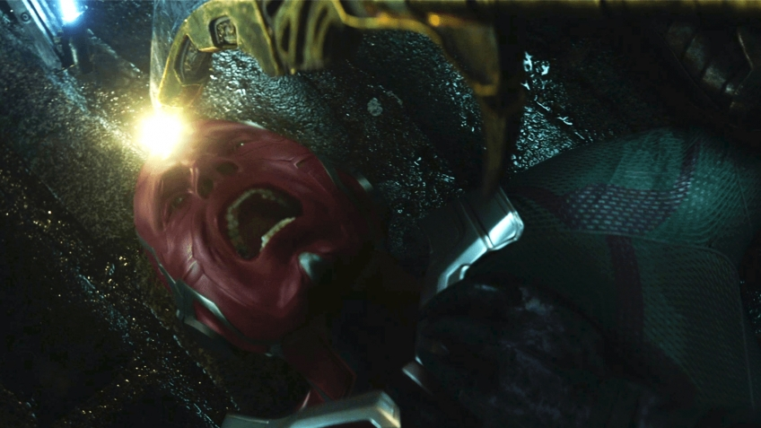

Месники. Війна нескінченнсті

Кіновселен Marvel існує вже десять років. За цей час вийшло вісімнадцять фільмів. Ще трохи, і франшиза обжене навіть «Бондіану», а головне, жодну з картин у серії не можна назвати провальною, а це само собою унікально.
Так, не всі стали однозначними хітами (взяти хоча б другого «Тора»), проте загальний рівень завжди був на висоті. Саме Marvel визначала напрямок, у якому розвивалося кіно про супергероїв у минуле десятиліття. Але, можливо, сама Marvel його й поховає. І справа не в тому, що «Месники: Війна нескінченності», блокбастер, на який фанати чекали кілька років, раптом виявився пустушкою або халтурою. Все рівним рахунком навпаки.
Месники закликають не спойлерити, і ми їм покірно слухаємось.
Гра варта всіх
Перед братами Руссо стояло найскладніше завдання — зібрати в одному фільмі всіх головних персонажів киновселенного і при цьому розповісти осудну історію. Здавалося б, неможливо. Під вагою стільки героїв картина просто розвалиться. Так, те саме скептики говорили перед виходом перших «Месників», але тоді йшлося про зовсім інші масштаби. З того часу з'явилися і «Доктор Стрендж», і «Вартові галактики», та інші-інші. Однак усупереч усім побоюванням режисери та сценаристи зуміли все пов'язати воєдино. «Війна нескінченності» — гігантська, але цільна мозаїка, в якій не можна з першого погляду знайти щось зайве чи непрацююче.
Так, не всі герої отримали рівний хронометраж. По суті, на першому плані залишилися Тор, Тоні Старк та Зоряний Лорд. У рамках глобального сюжету саме вони мають свій шлях, у ході якого персонажі стикаються з тим, що має змінити їх назавжди. Вибачте за хитромудрі формулювання, але інакше спойлерів не уникнути. Усім іншим учасникам дісталися ролі від другорядних до епізодичних. Але кожен має момент, який повністю виправдовує присутність персонажа у картині.
«Війна нескінченності» — це «Імперія завдає удару у відповідь» і «Темний лицар» у виконанні Marvel. Порівняння не випадкове, адже сюжетний кістяк у цих зовсім різних фільмів, по суті, один. Герої, що раніше здобували перемоги ціною малої крові, стикаються зі злом, яке насправді набагато сильніше, ніж здавалося. Таносом нас лякали кілька років, але ми, як і самі месники, звикли до не особливо вражаючих супротивників, яких майже завжди можна здолати жартома. А тому, коли все стає дуже серйозно, глядач виявляється до цього не готовий

Гнів титану
Зрозуміло чому саме братам Руссо довірили ставити головну стрічку нинішньої фази. «Інша війна» та «Протистояння» були не просто відмінними блокбастерами, а й першими фільмами Marvel, у яких драматичні, суто розмовні епізоди запам'ятовувалися чи не сильнішими за баталії. Теж, до речі, чудових.
Ось і в нових «Месниках» є кілька приголомшливих сцен, які без жодного екшену змусять глядача застигнути в заціпенінні. І щонайменше один такий епізод пов'язаний з Таносом — однозначно найкращим лиходієм у кіноселені Marvel. У ньому поєднуються мудрість і безумство, шляхетність та колосальна жорстокість. Від нього буквально віє міццю. Що найважливіше, антагоніста в якісь століття можна назвати глибоким. Він має свої ідеали, свій світогляд і навіть щодо зрозуміла мотивація. Джош Бролін, якого ми скоро побачимо ще й у «Дедпулі», блискуче оживив фіолетового титану. А цифровий грим анітрохи не заважав йому відігравати багату палітру емоцій. Ось таким мав бути Степовий Вовк у «Лізі справедливості», якби його створювали прямими руками.
Нескінченність - межа
І ось одна з перших причин, через яку «Війна нескінченності» може стати недосяжною точкою для всіх наступних фільмів цього кіновселенного. Танос просто дуже гарний! І саме в цій картині розкрито найкраще. Ми знаємо про нього рівно стільки, скільки маємо, бачили його і в бою, і в драматичних сценах. Далі він уже не буде таким вражаючим, але й когось краще за нього у Marvel уявити складно.

Те саме можна сказати і про взаємодію персонажів. Коли Людина-павук вперше зустрічає Стренджа, а Тоні Старк знайомиться з Пітером Квіллом, це викликає захоплення. Нарешті пасьянс склався. А потім починається екшен, у якому всі герої діють спільно, поєднують свої унікальні здібності. Це як битва в аеропорту з «Протистояння», лише масштабніша та різноманітніша. Ось воно, те, на що шанувальники коміксів чекали роками або навіть десятиліттями. І в цьому головна проблема. Перше враження можна справити лише один раз. Все наступне здаватиметься лише відлунням «Війни нескінченності». «Імперія завдає удару у відповідь» і «Темний лицар» завели свої франшизи в таку ж пастку.
Вижн не може допомогти друзям, адже якщо він потрапить до рук лиходіїв, усьому настане кінець. Простий і зрозумілий спосіб вивести з гри занадто сильного персонажа... Мабуть, головна вада нових «Месників» саме в тому, що вони не останні. "Війна нескінченності" не закінчена, але її кульмінація вже минула. Це пікова точка для всієї кіновселенної Marvel. Шанувальникам цих фільмів вона дасть усе, що вони так люблять: бездоганний екшен, поєднання легкого гумору з доречним пафосом, живих персонажів. Ну а ті, хто до франшизи давно охолодів, після перегляду можуть із чистою совістю поставити на ній хрест — усе найкраще вони вже побачили.